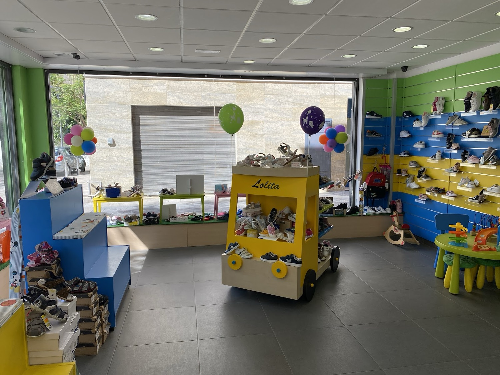
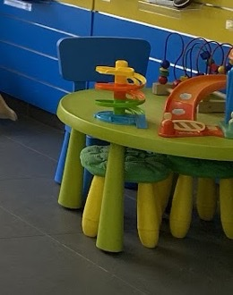
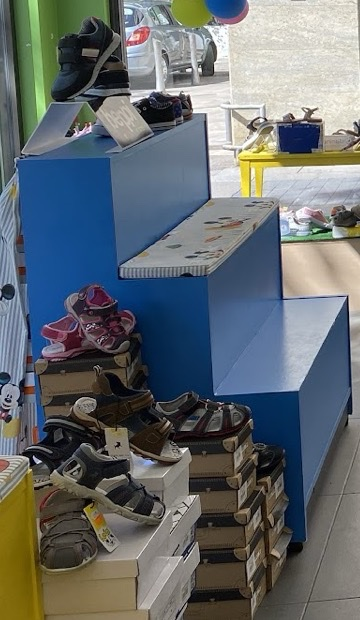
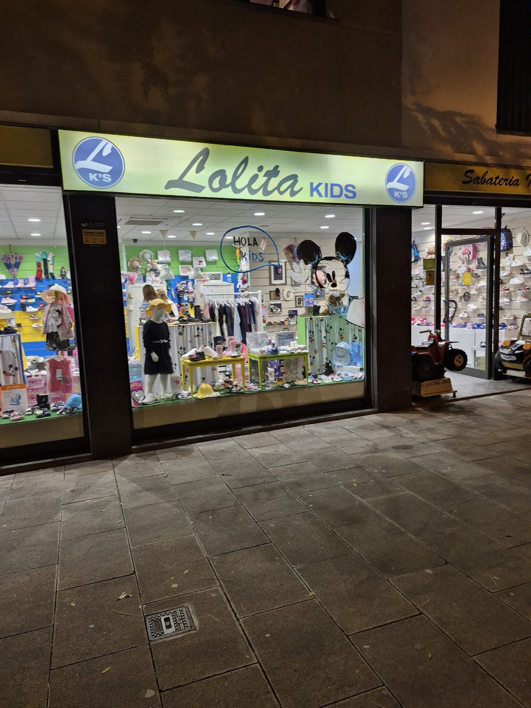

Sabateria infantil · Lloret de Mar
Lolitakids
Calzado de las primeras marcas en todas las tallas, desde los primeros pasos hasta el cole. Antes de venir, mide su pie aquí: te decimos qué número buscar.

Interactivo
¿Qué número calza?
Ponlo de pie sobre un folio, con la espalda recta. Marca el talón y la punta del dedo más largo, mide en centímetros y arrastra el tope del medidor hasta esa medida.
Arrastra el tope amarillo
- Largo del pie
- 15,0 cm
- Margen para crecer
- + 1,2 cm
- Suele corresponder a
- 2 – 3 años
- Revisa la talla
- cada 3 – 4 meses
Cálculo orientativo: cada marca horma distinto. En la tienda medimos el pie y lo probamos con calma.
Llamar y preguntar por el 24De los primeros pasos al cole
Por etapas
Para los peques
Los zapatos van por parejas
Dale la vuelta a dos cartas: si son el mismo zapato, se quedan. ¿Cuántos intentos necesitas para emparejar los seis?
Intentos 0Parejas 0/6
¡Bravo! Todas las parejas en 0 intentos.


La tienda
Mientras se los prueba…
…hay una mesa con juguetes para que los peques se entretengan, un banco con escalones para sentarse y un coche amarillo cargado de zapatos.
- «La atención es inmejorable. Muy profesional: siempre aconseja el zapato adecuado para mi bebé.»
- «Gran surtido de zapatos y dependienta muy atenta. Tienen una mesa con juguetes para los peques.»
Punto de recogida Mondial Relay. Envía y recoge tus paquetes aquí.
Y para los mayores
La familia Lolita
Mientras los peques estrenan zapatos, en el centro te esperan las otras tiendas Lolita, con calzado, bolsos y moda de temporada.
Ven a vernos
Carrer dels Horts, 2
| Lunes | 9:30–13:30 · 16:30–20:30 |
|---|---|
| Martes | 9:30–13:30 · 16:30–20:30 |
| Miércoles | 9:30–13:30 · 16:30–20:30 |
| Jueves | 9:30–13:30 · 16:30–20:30 |
| Viernes | 9:30–13:30 · 16:30–20:30 |
| Sábado | 9:30–13:30 · 16:30–20:30 |
| Domingo | Cerrado |
Horario
